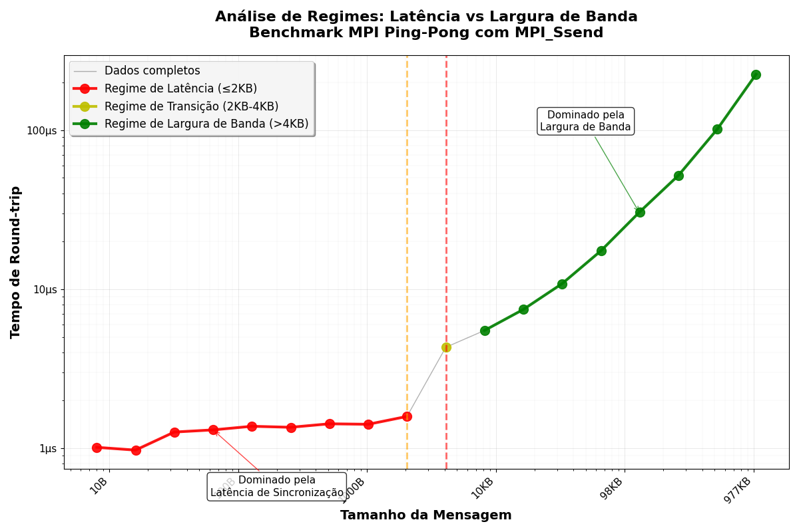
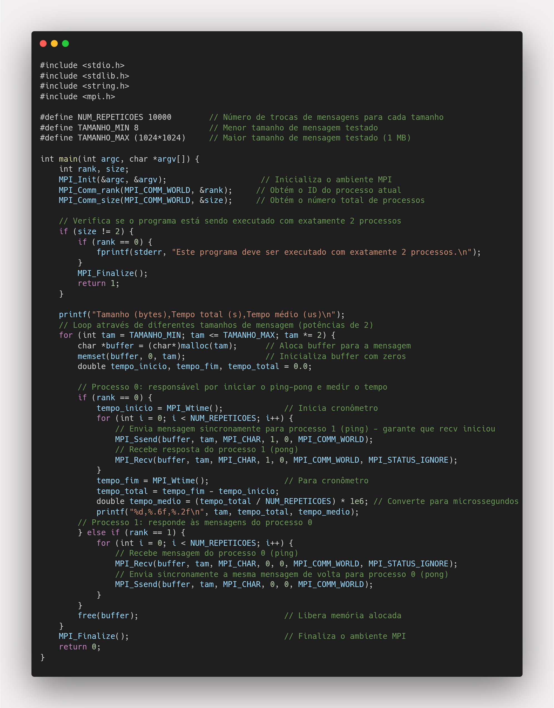

Tarefa 14: Programação em Memória Distribuída
Descrição
Este programa implementa um teste de ping-pong MPI entre dois processos para medir latência e largura de banda em função do tamanho da mensagem.
Sobre MPI (Message Passing Interface)
O que é MPI?
MPI é um padrão de comunicação para programação paralela em sistemas de memória distribuída. Ele define uma API que permite que processos executando em diferentes nós de um cluster (ou mesmo na mesma máquina) se comuniquem através de troca de mensagens.
Características do MPI:
- Portabilidade: Funciona em diferentes arquiteturas e sistemas operacionais
- Escalabilidade: Suporte desde poucos processos até milhares de processos
- Flexibilidade: Diferentes padrões de comunicação (ponto-a-ponto, coletiva)
- Performance: Otimizado para comunicação de alta performance
Funções MPI Utilizadas
Inicialização e Finalização
MPI_Init(&argc, &argv)
- Deve ser a primeira chamada MPI
- Configura ambiente de comunicação
MPI_Finalize()
- Deve ser a última chamada MPI
- Libera recursos e limpa estruturas
Identificação
MPI_Comm_rank(MPI_COMM_WORLD, &rank)
- Obtém ID único do processo (0, 1, 2...)
- MPI_COMM_WORLD inclui todos os processos
MPI_Comm_size(MPI_COMM_WORLD, &size)
- Obtém número total de processos
Comunicação
MPI_Ssend(buffer, count, datatype, dest, tag, comm)
- IMPORTANTE: Só completa quando MPI_Recv iniciou
- Garante sincronização real
MPI_Recv(buffer, count, datatype, source, tag, comm, status)
- Sempre bloqueante
- Espera até mensagem chegar
Temporização
MPI_Wtime()
- Tempo de alta precisão em segundos
- Resolução em microssegundos
- Monotônico - não afetado por mudanças no relógio
- Ideal para benchmarks
Padrão Ping-Pong
O teste ping-pong é um benchmark clássico para medir:
- Latência: Tempo mínimo para enviar uma mensagem pequena
- Largura de Banda: Taxa máxima de transferência para mensagens grandes
- Overhead: Custo fixo da comunicação independente do tamanho da mensagem
Padrões de Comunicação: Bloqueante vs Não-Bloqueante
Comunicação Bloqueante
Uma operação bloqueante não retorna até que seja seguro reusar os recursos envolvidos (buffers, variáveis).
Características:
- ✅ Segurança: Garante que a operação foi completada
- ✅ Simplicidade: Programação mais intuitiva
- ❌ Performance: Pode causar espera desnecessária
- ❌ Deadlocks: Risco se não bem planejado
Exemplos de Funções Bloqueantes:
// MPI_Send - pode ser bloqueante ou não dependendo da implementação
MPI_Send(buffer, count, MPI_INT, dest, tag, MPI_COMM_WORLD);
// MPI_Ssend - SEMPRE bloqueante (synchronous)
MPI_Ssend(buffer, count, MPI_INT, dest, tag, MPI_COMM_WORLD);
// MPI_Recv - SEMPRE bloqueante
MPI_Recv(buffer, count, MPI_INT, source, tag, MPI_COMM_WORLD, &status);
Exemplo Prático - Ping-Pong Bloqueante:
if (rank == 0) {
MPI_Send(data, 100, MPI_INT, 1, 0, MPI_COMM_WORLD); // Envia para processo 1
MPI_Recv(data, 100, MPI_INT, 1, 0, MPI_COMM_WORLD, &status); // Recebe de volta
} else if (rank == 1) {
MPI_Recv(data, 100, MPI_INT, 0, 0, MPI_COMM_WORLD, &status); // Recebe do processo 0
MPI_Send(data, 100, MPI_INT, 0, 0, MPI_COMM_WORLD); // Envia de volta
}
Comunicação Não-Bloqueante
Uma operação não-bloqueante retorna imediatamente, iniciando a operação em background.
Características:
- ✅ Performance: Permite sobreposição de computação e comunicação
- ✅ Flexibilidade: Múltiplas operações simultâneas
- ❌ Complexidade: Requer gerenciamento de requests
- ❌ Sincronização: Necessita verificar completude com Wait/Test
Exemplos de Funções Não-Bloqueantes:
MPI_Request request;
MPI_Status status;
// MPI_Isend - send não-bloqueante (immediate send)
MPI_Isend(buffer, count, MPI_INT, dest, tag, MPI_COMM_WORLD, &request);
// MPI_Irecv - recv não-bloqueante (immediate receive)
MPI_Irecv(buffer, count, MPI_INT, source, tag, MPI_COMM_WORLD, &request);
// Verificar se completou
MPI_Wait(&request, &status); // Espera completar
// ou
int flag;
MPI_Test(&request, &flag, &status); // Verifica sem esperar
Exemplo Prático - Ping-Pong Não-Bloqueante:
MPI_Request send_req, recv_req;
MPI_Status status;
if (rank == 0) {
// Inicia send não-bloqueante
MPI_Isend(data, 100, MPI_INT, 1, 0, MPI_COMM_WORLD, &send_req);
// Inicia recv não-bloqueante
MPI_Irecv(data, 100, MPI_INT, 1, 1, MPI_COMM_WORLD, &recv_req);
// Pode fazer outras computações aqui...
// Espera ambas as operações completarem
MPI_Wait(&send_req, &status);
MPI_Wait(&recv_req, &status);
} else if (rank == 1) {
MPI_Irecv(data, 100, MPI_INT, 0, 0, MPI_COMM_WORLD, &recv_req);
MPI_Isend(data, 100, MPI_INT, 0, 1, MPI_COMM_WORLD, &send_req);
MPI_Wait(&recv_req, &status);
MPI_Wait(&send_req, &status);
}
Tipos de Send em MPI
1. MPI_Send (Standard Send)
MPI_Send(buffer, count, datatype, dest, tag, comm);
- Semântica: Pode ser bloqueante ou não-bloqueante
- Implementação: Depende do tamanho da mensagem
- Uso: Geral, sem garantias específicas
2. MPI_Ssend (Synchronous Send)
MPI_Ssend(buffer, count, datatype, dest, tag, comm);
- Semântica: SEMPRE bloqueante
- Garantia: Só completa quando MPI_Recv iniciou
- Uso: Sincronização garantida
3. MPI_Bsend (Buffered Send)
MPI_Bsend(buffer, count, datatype, dest, tag, comm);
- Semântica: Não-bloqueante (se buffer disponível)
- Requisito: Buffer alocado com MPI_Buffer_attach
- Uso: Garantir não-bloqueio
Por que MPI_Ssend ao invés de MPI_Send?
Diferenças entre os tipos de Send:
1. MPI_Send (Standard Send):
- Semântica não-determinística
- Para mensagens pequenas: geralmente buffered (não-bloqueante)
- Para mensagens grandes: geralmente synchronous (bloqueante)
- Problema: Comportamento inconsistente para diferentes tamanhos
2. MPI_Ssend (Synchronous Send):
- SEMPRE bloqueante - só completa quando recv iniciou
- Comportamento determinístico independente do tamanho
- Vantagem: Mede latência real de comunicação
- Ideal para benchmarks de performance de rede
Benefícios para este benchmark:
- ✅ Medição precisa: Elimina variações causadas por buffering interno
- ✅ Comportamento consistente: Mesmo padrão para todos os tamanhos
- ✅ Latência real: Mede tempo de comunicação efetiva entre processos
- ✅ Resultados comparáveis: Entre diferentes implementações MPI
Detalhamento dos Parâmetros das Funções MPI
Exemplo de chamada MPI_Ssend:
MPI_Ssend(buffer, tam, MPI_CHAR, 1, 0, MPI_COMM_WORLD);
buffer: Ponteiro para o array de dados a enviartam: Número de caracteres a enviar (tamanho da mensagem)MPI_CHAR: Tipo de dados = char (1 byte por elemento)1: Rank do processo destino (processo 1)0: Tag da mensagem (identificador, pode ser qualquer inteiro)MPI_COMM_WORLD: Comunicador global (todos os processos)
Exemplo de chamada MPI_Recv:
MPI_Recv(buffer, tam, MPI_CHAR, 0, 0, MPI_COMM_WORLD, MPI_STATUS_IGNORE);
buffer: Ponteiro para o array que receberá os dadostam: Número máximo de caracteres a receberMPI_CHAR: Tipo de dados esperado = char0: Rank do processo remetente (processo 0)0: Tag da mensagem esperada (deve coincidir com o send)MPI_COMM_WORLD: ComunicadorMPI_STATUS_IGNORE: Não precisamos das informações de status
Tags e Comunicadores:
- Tags: Permitem distinguir diferentes tipos de mensagens entre os mesmos processos
- Comunicadores: Definem grupos de processos que podem se comunicar
- MPI_COMM_WORLD: Comunicador padrão que inclui todos os processos do programa
Resultados
Dados Coletados - Resultados com MPI_Ssend
O programa testou tamanhos de mensagem de 8 bytes até 1 MB (1.048.576 bytes), realizando 10.000 repetições para cada tamanho usando MPI_Ssend para garantir sincronização.
| Tamanho (bytes) |
Tempo médio (μs) |
Tempo total (s) |
| 8 | 1.01 | 0.010058 |
| 16 | 0.97 | 0.009663 |
| 32 | 1.26 | 0.012645 |
| 64 | 1.30 | 0.012959 |
| 128 | 1.37 | 0.013721 |
| 256 | 1.35 | 0.013512 |
| 512 | 1.42 | 0.014150 |
| 1024 | 1.41 | 0.014057 |
| 2048 | 1.58 | 0.015825 |
| 4096 | 4.30 | 0.042983 |
| 8192 | 5.49 | 0.054875 |
| 16384 | 7.44 | 0.074419 |
| 32768 | 10.81 | 0.108077 |
| 65536 | 17.39 | 0.173949 |
| 131072 | 30.56 | 0.305616 |
| 262144 | 51.87 | 0.518749 |
| 524288 | 101.23 | 1.012320 |
| 1048576 | 224.12 | 2.241173 |
Análise Gráfica: Latência vs Largura de Banda

Gráfico mostrando os regimes de latência e largura de banda em função do tamanho da mensagem
Análise dos Regimes com MPI_Ssend
1. Regime de Latência (mensagens ≤ 2KB)
- Características: Tempo dominado pela latência de comunicação sincronizada
- Observação: Tempo constante (~1.0-1.6 μs)
- Causa: Overhead do protocolo MPI_Ssend
- Diferença: Latência ~2.5x maior que MPI_Send
2. Regime de Transição (2KB - 4KB)
- Características: Início da influência do tamanho
- Observação: Aumento no tempo (1.58 → 4.30 μs)
- Causa: Latência + tempo de transferência
3. Regime de Largura de Banda (mensagens > 4KB)
- Características: Tempo cresce linearmente
- Observação: Crescimento proporcional ao tamanho
- Causa: Largura de banda é o fator limitante
Explicação da Mudança de Dominância entre Regimes
A mudança de dominância entre o regime de latência e o regime de largura de banda é um fenômeno fundamental em comunicação MPI que pode ser explicado pela natureza dos custos envolvidos na transmissão de dados:
1. Análise dos Custos de Comunicação
Toda comunicação MPI possui dois componentes principais de tempo:
- Custo fixo (latência α): Tempo necessário para estabelecer a comunicação, processar headers, sincronizar processos e realizar handshakes entre remetente e destinatário. Este custo é independente do tamanho da mensagem.
- Custo variável (largura de banda β×n): Tempo proporcional ao tamanho da mensagem, determinado pela velocidade de transferência efetiva dos dados através do meio de comunicação.
2. Comportamento nos Diferentes Regimes
No regime de latência (mensagens pequenas ≤ 2KB):
- O termo α (latência) domina a equação T(n) = α + β×n
- Como n é pequeno, β×n é desprezível comparado a α
- Resultado: tempo praticamente constante (~1.0-1.6 μs) independente do tamanho
- O overhead de estabelecimento da comunicação representa a maior parte do tempo total
No regime de largura de banda (mensagens grandes > 4KB):
- O termo β×n passa a dominar a equação T(n) = α + β×n
- Como n é grande, β×n >> α
- Resultado: tempo cresce linearmente com o tamanho da mensagem
- A velocidade de transferência dos dados torna-se o fator limitante
3. O Ponto de Transição (2-4KB)
A transição ocorre quando α ≈ β×n, ou seja, quando os custos fixos e variáveis se tornam comparáveis. Neste experimento:
- Para 2KB: tempo = 1.58 μs (ainda dominado pela latência)
- Para 4KB: tempo = 4.30 μs (início da dominância da largura de banda)
- O salto de 2.7x no tempo indica que o sistema começou a ser limitado pela transferência de dados
4. Fatores Técnicos que Influenciam a Transição
- Buffers internos: Mensagens pequenas podem ser copiadas para buffers internos do MPI, enquanto mensagens grandes requerem transferência direta
- Protocolos de transferência: MPI pode usar diferentes estratégias (eager vs rendezvous protocol) baseadas no tamanho da mensagem
- Sincronização MPI_Ssend: A garantia de sincronização adiciona overhead constante, mas torna a medição mais precisa
- Características do hardware: A largura de banda efetiva da memória e do sistema de interconexão determina o coeficiente β
5. Implicações Práticas
Compreender esta transição é crucial para:
- Otimização de aplicações: Mensagens pequenas devem ser agrupadas para amortizar a latência
- Escolha de algoritmos: Diferentes estratégias são eficientes para diferentes tamanhos de dados
- Predição de performance: O modelo α-β permite estimar tempos de comunicação
- Tuning de sistemas: Identificar gargalos de latência vs largura de banda
Métricas Importantes - Versão MPI_Ssend
- Latência base: ~1.0 μs (para mensagens pequenas)
- Largura de banda efetiva: ~4.7 GB/s (calculada para mensagem de 1MB)
- Ponto de transição: ~2-4KB (onde a largura de banda começa a dominar)
- Overhead de sincronização: ~0.6 μs comparado ao MPI_Send padrão
Observações Importantes:
- MPI_Ssend é mais lento: Latência base ~2.5x maior que MPI_Send
- Sincronização garantida: Elimina variações por buffering
- Comportamento consistente: Mesmo padrão para todos os tamanhos
- Ideal para benchmarks: Medição precisa da latência real de comunicação
Conclusões
- Para mensagens pequenas (≤1KB), a latência de comunicação é o fator dominante
- Para mensagens grandes (>1KB), a largura de banda se torna limitante
- O sistema MPI local apresenta excelente performance com latência muito baixa
- A transição entre regimes ocorre em torno de 1-4KB, típico para sistemas de comunicação local
- O modelo α-β ajuda a prever performance para diferentes tamanhos de mensagem
- MPI_Ssend fornece medições mais precisas para benchmarks de comunicação
- A sincronização garantida elimina incertezas sobre políticas de buffering
Código Fonte
Implementação do Programa MPI Ping-Pong

Código fonte completo do programa implementado em C com MPI_Ssend